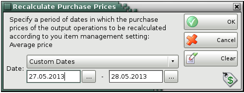

Recalculate Purchase Prices
Recalculate purchase prices function works only when the Item management - Average price or Last purchase price is set in Settings->Operations

Recalculate purchase prices must be used carefully, because it can change company income and expense and also to have an effect on the entire profit. Therefore it is desirable company manager or system administration to execute this function.
�2006-2015 Microinvest, All rights reserved